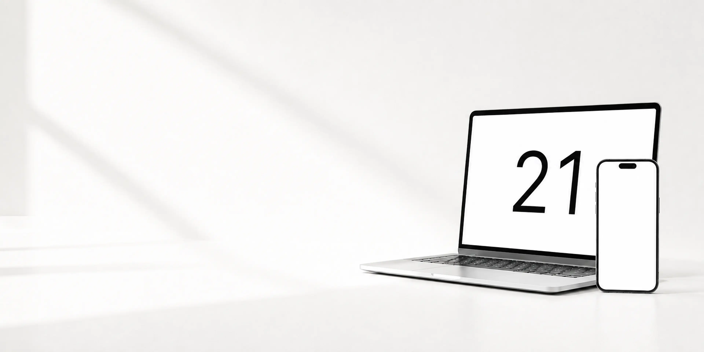

/01
Projektowanie wnętrz · Ciechanów
Monika Serbista
Studio wnętrzarskie potrzebowało strony w tonie własnych realizacji — spokojnej, ciemnej i opartej na fotografii.
- Strona wielopodstronowa
- Brief online
- Portfolio

01 / Realizacje
Każda powstała od zera — pod konkretną markę, odbiorcę i cel biznesowy.
/01
Projektowanie wnętrz · Ciechanów
Studio wnętrzarskie potrzebowało strony w tonie własnych realizacji — spokojnej, ciemnej i opartej na fotografii.


/02
Projektowanie wnętrz
Elegancka wizytówka pracowni zbudowana wokół portfolio i krótkiej ścieżki do zapytania o projekt.


/03
Wnętrza prywatne
Kameralna strona dla projektantki wnętrz — ciepła paleta i czytelnie opisany proces współpracy.


/04
Komis i detailing · Miastko
Dwie usługi na jednej stronie — sprzedaż aut i detailing — rozdzielone na wyraźne ścieżki.


/05
Bramy i ogrodzenia · Ruda Śląska
Techniczna strona nastawiona na wycenę, z lokalnym SEO pod miasta w regionie.
02 / Oferta
Bez ukrytych dopłat. Zakres i termin ustalamy przed rozpoczęciem realizacji.
01
Zwięzły landing page — jedna strona, bez podstron. Konkretnie przedstawia ofertę i prowadzi do kontaktu.
1500 zł
Zapytaj o pakiet ↗02
Pełna strona firmowa z trzema podstronami. Więcej miejsca na usługi, realizacje i historię firmy.
2000 zł
Zapytaj o pakiet ↗03
Wszystko ze Standardu oraz SEO. Strona od początku pracuje na widoczność firmy w Google.
3000 zł
Zapytaj o pakiet ↗04
Audyt, optymalizacja i pozycjonowanie strony, którą już masz — bez znaczenia, kto ją wcześniej wykonał.
1000 zł
Zapytaj o pakiet ↗03 / Dlaczego ja
Od pierwszej rozmowy do publikacji rozmawiasz bezpośrednio ze mną. Dzięki temu projekt powstaje szybciej, a każda decyzja jest jasna.
Bezpośredni kontakt przez cały projekt
Projekt dopasowany do Twojej firmy
Ustalona cena bez ukrytych dopłat
Pomoc przy publikacji i po oddaniu strony
04 / Proces realizacji
Prosty proces bez technicznego chaosu. Przez cały czas masz ze mną kontakt i widzisz, jak rozwija się projekt.
Poznaję Twoją firmę, potrzeby i cel strony. Ustalamy zakres, cenę oraz termin.
Przekazujesz logo, zdjęcia i informacje. Pomagam uporządkować to, czego jeszcze brakuje.
Otrzymujesz pierwszy kierunek. Nanoszę ewentualne zmiany i wspólnie dopracowujemy każdy ekran.
Finalizuję wersję mobilną, podpinam domenę i publikuję gotową stronę.
Przez cały proces jesteśmy w kontakcie — na każdym etapie możesz zgłosić pytanie lub zmianę.
Porozmawiajmy ↗05 / Najczęstsze pytania
Najczęściej od 7 do 14 dni od otrzymania materiałów. Dokładny termin ustalamy przed startem.
Tak. Na każdym etapie widzisz postęp i możesz zgłaszać zmiany — nic nie jest robione bez Twojej akceptacji.
Tak. Każdy projekt dopracowuję osobno na komputerach, tabletach i telefonach.
Logo, zdjęcia i podstawowe informacje o firmie. Jeśli nie masz gotowych tekstów, pomogę je uporządkować.
Tak. Mogę podpiąć domenę, uruchomić stronę i skonfigurować podstawowe narzędzia Google.
06 / Kontakt
Opisz krótko swoją firmę. Odpowiem z konkretną propozycją, wyceną i możliwym terminem.